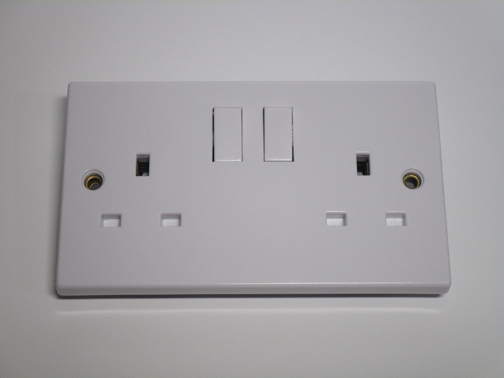
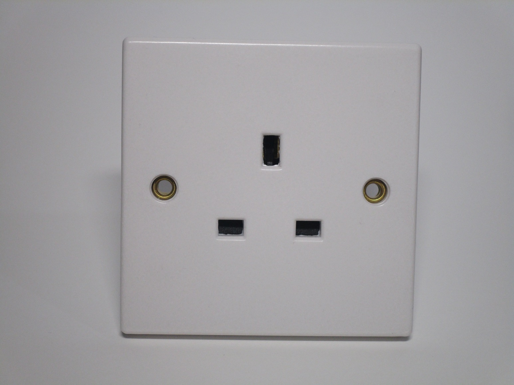
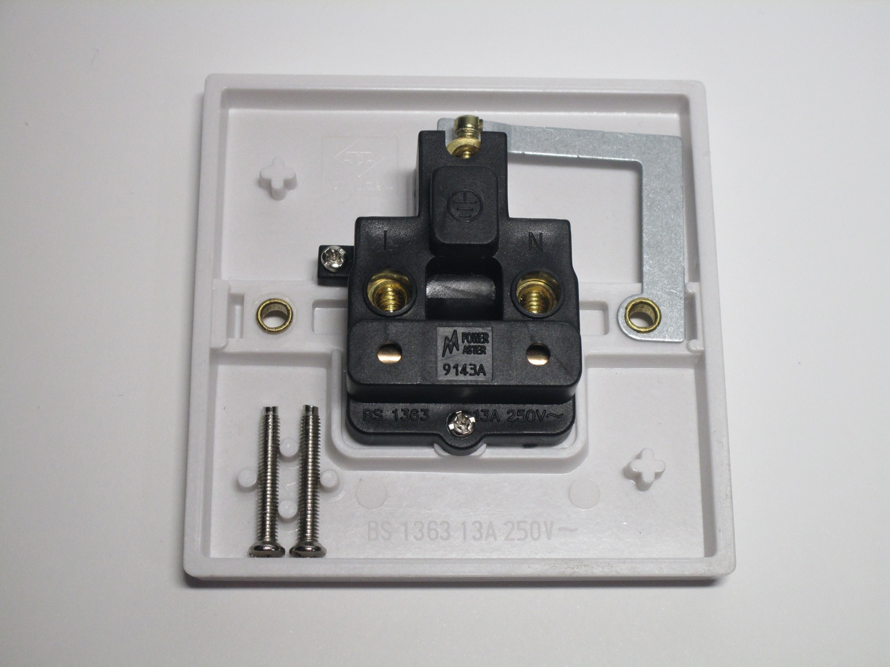
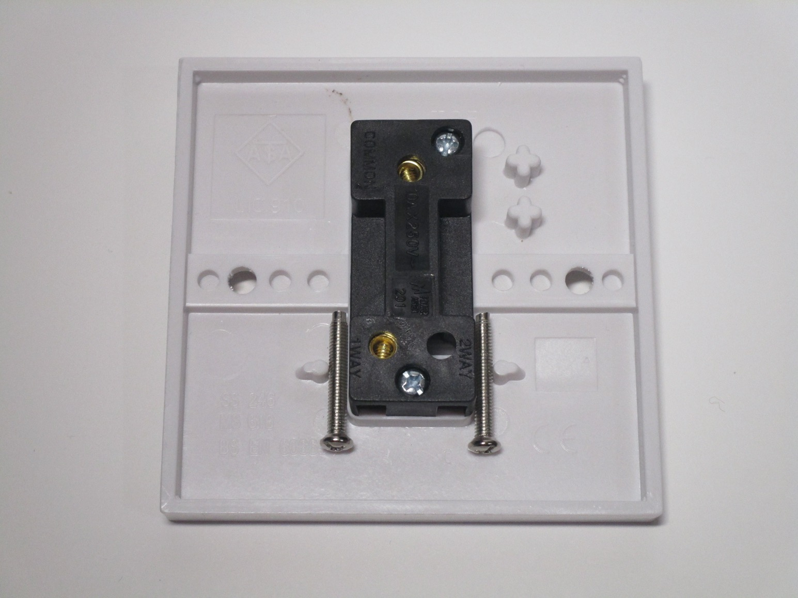
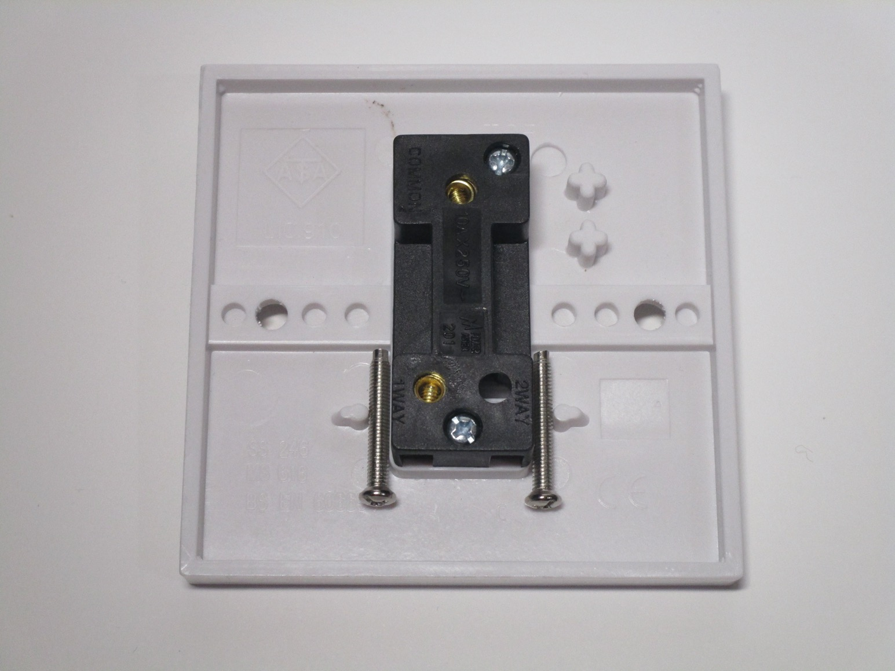
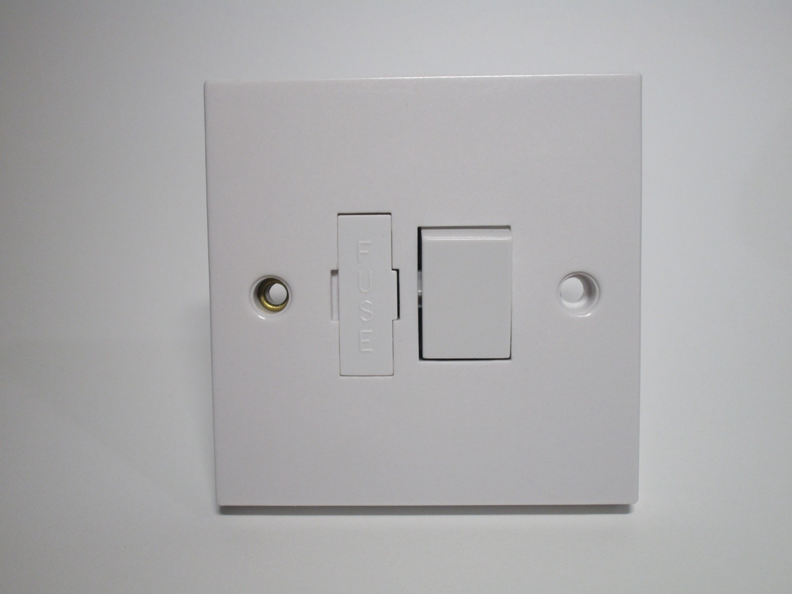
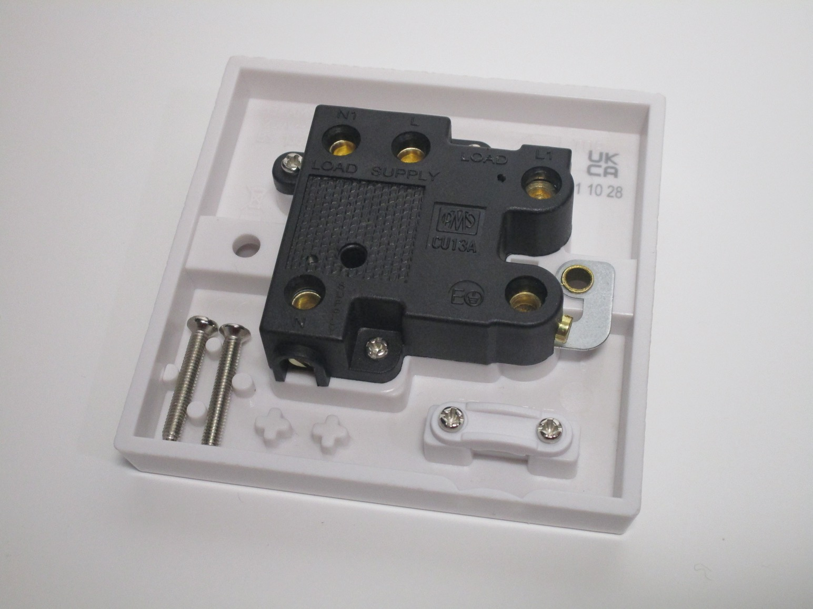

Electrical items from the UK
Standard power socket
Rating: 13A 250V
This is a common style of power socket as found in the UK and Ireland.
{kind=link}

Single power socket
Rating: 13A 250V
This is a single power socket, meant to go in a one-gang box. It's very similar to the one shown above, though, of course, it only has one socket, and without a power switch.
 {kind=link}
{kind=link}
One-way light switch
Rating: 10A 250V
This is a very standard light switch as found in the UK. This specific one is a one-way switch, used for turning on a light from a single point - as such, it only has two terminals. There are also two-way and intermediate switches for turning on lights from multiple locations.
The depth of the switch is considerably narrower than most other ones from other countries - that's so that it can fit in very shallow wall boxes, which are often used for mounting light switches there.
 

{kind=link}
Fused connection unit
Rating: 13A 250V
This device is used to connect a hard-wired appliance. UK circuits are generally protected by a 32A breaker, so a fuse (13A, can be swapped for lower values) is necessary to protect the power cord of the device; there's also a double-pole switch for isolation.
The fuse can be swapped easily by removing the fuse holder at the front (which can't be extracted fully, so it's impossible to lose it). An indent is present in the plastic, which can be broken off to pass a cord through, and a cord grip is present to secure it.
Essentially, this device offers the same features as a plug and socket would, but without actually being a plug and socket.
 {kind=link}
{kind=link}